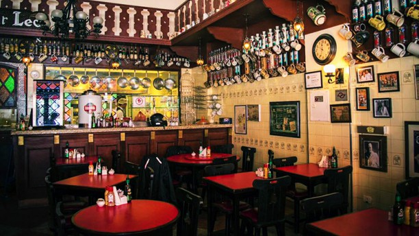

Boteco Dus Carioca
Av. Faria Lima, 1164, São Paulo - SP

Horário de funcionamento: 18:00 as 01:00 (terça a domingo)
Musica ao vivo: sabados e domingos
Preço: $
Avaliação: ★★★
Fundado por dois irmãos cariocas em 2011, o Bar dus Cariocas tem como missão
proporcionar a experiência de um tradicional bar do Rio de Janeiro. Com uma
decoração que remete a pontos turisticos da cidade maravilhosa. O Bar é famoso
por sua cerveja estar sempre gelada e ter um preço de custo baixo para a região.
Fato que faz o Bar ficar lotado em horario de happy hour.